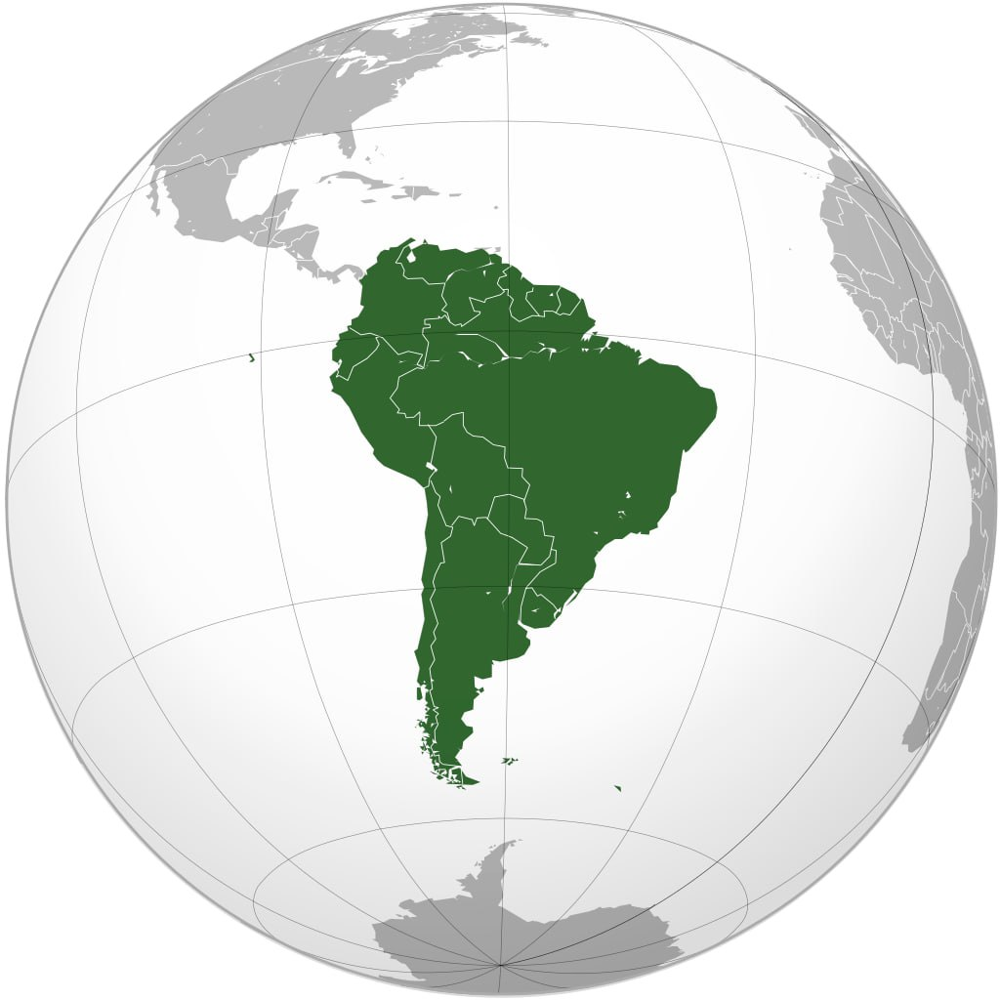

|  | |
| Aholisi | 420,458,044 (2016) |
|---|---|
| Aholi zichligi | 21.4/km2 |
| Etnoxoronim | Janubiy Amerikalik |
| Davlatlar | 13 ta |
| Tillar | ispancha, portugalcha, inglizcha, fransuzcha, nemischa va boshqa asosiy tillar |
| Vaqt mintaqalari | UTC-2dan UTC-5gacha |
| Yirik shaharlar |
São Paulo Lima Bogotá Rio de Janeiro Santiago Karakas Buenos Aires Salvador Brazilia Fortaleza |